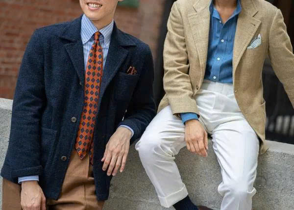
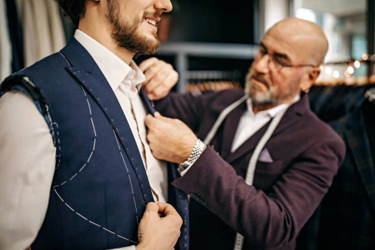
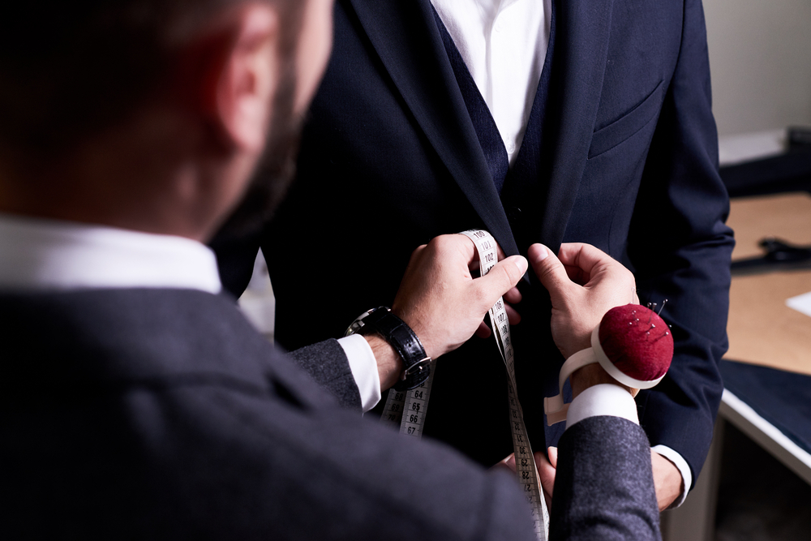

Sartorial là gì?
Sartorial là thuật ngữ dùng để chỉ phong cách ăn mặc liên quan trực tiếp đến nghệ thuật may đo. Nó nhấn mạnh vào phom dáng, độ vừa vặn, chất liệu vải và cấu trúc trang phục, thay vì chạy theo xu hướng thời trang ngắn hạn. Thuật ngữ sartorial bắt nguồn từ tiếng Latin sartor, nghĩa là thợ may. Vì vậy, Sartorial thường gắn liền với trang phục may đo hoặc may sẵn chất lượng cao, nơi từng chi tiết được thiết kế để phù hợp với cơ thể và mục đích sử dụng của người mặc. Nói một cách đơn giản, Sartorial tập trung vào chất lượng, kỹ thuật may và sự phù hợp, hơn là sự phô trương hay tính thời vụ của thời trang.
Từ gốc: Sartor (Latin) = thợ may
Sartorial = thuộc về nghệ thuật may đo.

Lịch sử ra đời của thời trang Sartorial
Phong cách Sartorial có nguồn gốc từ châu Âu, gắn liền với sự phát triển của nghệ thuật may đo thủ công, đặc biệt là trang phục nam giới. Thuật ngữ sartorial bắt nguồn từ tiếng Latin sartor, nghĩa là thợ may, phản ánh mối liên hệ trực tiếp giữa phong cách này và nghề may truyền thống.
Từ thế kỷ 17–18, tại các quốc gia như Anh, Pháp và Ý, trang phục may đo bắt đầu trở thành tiêu chuẩn trong giới quý tộc và tầng lớp trung lưu đang phát triển. Quần áo không còn chỉ mang chức năng che phủ cơ thể, mà trở thành dấu hiệu của địa vị xã hội, kỷ luật cá nhân và sự nghiêm túc trong đời sống công cộng.
Đến thế kỷ 19, Savile Row tại London nổi lên như trung tâm của nghệ thuật may đo nam giới, đặt nền móng cho phong cách Sartorial hiện đại. Các bộ suit được thiết kế với phom dáng chuẩn, cấu trúc rõ ràng và sự vừa vặn cao, nhấn mạnh tính thực dụng và trang trọng.
Sang thế kỷ 20, Sartorial tiếp tục phát triển và lan rộng, đặc biệt tại Ý, nơi phong cách may đo được điều chỉnh theo hướng nhẹ hơn, linh hoạt hơn nhưng vẫn giữ nguyên các giá trị cốt lõi như chất lượng, kỹ thuật và sự vừa vặn. Từ đó, Sartorial trở thành thuật ngữ dùng để mô tả phong cách ăn mặc mang tính cổ điển, kỷ luật và bền vững, đối lập với thời trang nhanh và xu hướng ngắn hạn.
Đặc điểm chính của thời trang Sartorial
Thời trang Sartorial là phong cách ăn mặc gắn liền với truyền thống may đo, tập trung vào chất lượng và cấu trúc trang phục hơn là xu hướng thời trang ngắn hạn. Các đặc điểm chính của phong cách này bao gồm:
1. Nghệ thuật may đo và độ vừa vặn
Sartorial đề cao trang phục được may đo hoặc được chỉnh sửa để phù hợp với cơ thể người mặc. Phom dáng, vai áo, độ dài tay áo và ống quần được cân chỉnh cẩn thận nhằm đảm bảo sự vừa vặn và thoải mái, đồng thời phù hợp với mức độ chuyên nghiệp hoặc thời trang đường phố, tùy thuộc vào nhu cầu người dùng mà nhà may sẽ thiết lập kích cỡ và loại vải phù hợp để đáp ứng nhu cầu đó một cách toàn diện nhất.
2. Chất liệu và kỹ thuật
Phong cách Sartorial ưu tiên các loại vải tự nhiên như len, cotton, linen hoặc lụa. Kỹ thuật may chú trọng đến cấu trúc áo, lớp lót, đường may và độ bền của trang phục để đảm bảo tính thẩm mĩ và tuổi thọ tốt nhất cho trang phục cũng như mức độ giữ ấm hoặc độ thoáng khí, tùy thuộc vào môi trường làm việc, đi đôi với khí hậu nóng ẩm hay khô rét.
3. Tính cổ điển và bền vững
Như đã đề cập, Sartorial không chạy theo xu hướng thời trang ngắn hạn. Thiết kế mang tính cổ điển, ít thay đổi theo thời gian, giúp trang phục có thể sử dụng lâu dài và giữ được giá trị thẩm mỹ.
4. Màu sắc và họa tiết tiết chế
Màu sắc thường trung tính hoặc trầm như đen, xám, xanh navy, nâu, be. Họa tiết đơn giản, truyền thống và không mang tính phô trương.
5. Tính kỷ luật trong cách ăn mặc
Sartorial coi trọng sự phù hợp với hoàn cảnh. Trang phục được lựa chọn dựa trên môi trường, mục đích sử dụng và bối cảnh xã hội, thể hiện sự nghiêm túc và tôn trọng.
Đôi điều về Suit
Suit khác gì với Sartorial?
Đây là dữ liệu mà nhiều người nghiên cứu Sartorial dễ lầm.
Nếu Sartorial đề cao việc ăn mặc chỉn chu, may đo, không phô trương, thì Suit chính là kết quả cao nhất của Sartorial. Có thể nói Suit chính là Sartorial. Nhưng Sartorial đơn thuần chưa chắc đã là Suit.
Những yếu tố làm nên bộ Suit

Màu sắc và chất vải
Đây là điểm khác biệt chính giữa Suit và thời trang Sartorial. Một bộ Suit bắt buộc phải sử dụng cùng một loại vải và một màu cố định. Từ áo vest, quần âu cho tới áo Jacket, tất cả phải cùng 1 loại vải, cùng 1 màu duy nhất.
Trong khi đó, Sartorial đơn thuần không ép người dùng phải mặc cùng 1 màu, một vải. Người mặc chỉ cần đi theo tinh thần chỉn chu với những món thiết yếu như Blazer (hoặc Jacket tách ra từ Suit), quần âu, hoặc áo vest như một phụ kiện thêm. Điểm đặc biệt là, dựa trên sở thích mỗi người, có thể phối ra nhiều gam màu như Beige-Navy hoặc Beige-Brown, .v..v.. Mọi người có thể xem phong cách Sartorial ở hình dưới để tham khảo về cách phối màu. Lưu ý rằng có vô vàn cách để phối màu, tùy trên sở thích người mặc, đây chỉ là gam màu tham khảo.

Những quy tắc căn bản trong phong cách Sartorial
Quy tắc cài khuy Jacket
Với jacket chỉ có 1 khuy thì ta không bàn. Với jacket có 2 khuy thì chỉ nên cài khuy phía trên trên, khuy dưới không cài.
Trong khi đó, với jacket 3 khuy, ta cài khuy giữa, khuy trên có thể cài hay không tùy sở thích.
Với jacket có 6 khuy (với 2 hàng khuy, mỗi hàng có 3 khuy) thì ta chỉ nên cài khuy ở giữa, hàng bên phải.
Về cơ bản, có thể nói, trong Sartorial, khuy dưới cùng không bao giờ sử dụng đến
>> Khi đứng, jacket có thể cài khuy hoặc không, tùy sở thích. Nhưng khi ngồi, ta nên tháo khuy, vừa để thoải mái, vừa tránh làm nhăn áo,
Suit phải vừa vặn tuyệt đối
Một bộ suit đẹp không nằm ở giá tiền, mà nằm ở độ vừa vặn. Vai áo phải ôm khít, không bị nhăn hoặc phồng lên. Tay áo nên để lộ khoảng 1–1.5cm cổ tay áo sơ mi. Quần không được quá bó, cũng không được thùng thình. Suit không vừa giống như một lời giới thiệu cẩu thả – người ta nhìn là đánh giá ngay. Vừa vặn là nền tảng của mọi chuẩn mực sartorial.
Vai áo là xương sống của cả bộ suit
Phần vai quyết định cấu trúc tổng thể. Nếu vai áo rộng hơn vai thật, trông sẽ lôi thôi. Nếu chật, sẽ tạo nếp gãy và mất dáng. Một bộ suit đúng nghĩa phải khiến người mặc đứng thẳng hơn mà không cần cố gắng. Cấu trúc vai tốt giống như bộ khung của một tòa nhà – âm thầm nhưng quyết định tất cả.
Luôn cài nút đúng quy tắc
Suit hai nút thì chỉ cài nút trên, ba nút thì “đôi khi, luôn, không bao giờ” – nghĩa là có thể cài nút trên, luôn cài nút giữa, và không bao giờ cài nút dưới cùng. Khi ngồi phải mở nút. Đây không chỉ là truyền thống, mà còn là biểu hiện của sự hiểu biết và tôn trọng quy chuẩn.
Độ dài quần phải chuẩn xác
Quần suit lý tưởng nên có một nếp gãy nhẹ trên giày, không chất đống vải ở cổ chân. Quần quá dài khiến tổng thể nặng nề, quá ngắn thì mất cân đối. Độ dài chuẩn tạo nên cảm giác thanh thoát và gọn gàng, như một câu văn được ngắt nhịp đúng chỗ.
Giày và thắt lưng phải đồng bộ
Nguyên tắc cơ bản: màu giày và thắt lưng phải tương đồng. Giày đen đi với suit trang trọng, giày nâu hợp với suit xanh navy hoặc xám. Đừng để một chi tiết nhỏ phá vỡ tổng thể. Sartorial là nghệ thuật của sự thống nhất, nơi từng yếu tố đều nói cùng một ngôn ngữ.
Sơ mi phải là nền tảng tinh tế
Sơ mi trắng hoặc xanh nhạt là lựa chọn an toàn và kinh điển. Cổ áo phải đứng form, không mềm oặt. Cuff nên vừa với cổ tay, không quá dài. Sơ mi không phải nhân vật chính, nhưng là lớp nền làm nổi bật suit và cà vạt. Một nền tốt giúp toàn bộ bố cục trở nên hài hòa.
Cà vạt phải chạm thắt lưng
Độ dài cà vạt lý tưởng là đầu nhọn chạm nhẹ vào thắt lưng. Quá dài hay quá ngắn đều khiến tổng thể mất cân đối. Nút thắt nên gọn gàng, cân đối và phù hợp với kiểu cổ áo. Một nút thắt đẹp là dấu hiệu của sự chỉn chu và kỷ luật cá nhân.
Pocket square không trùng hoàn toàn với cà vạt
Khăn cài túi ngực không nên trùng màu và họa tiết hoàn toàn với cà vạt. Nó nên bổ trợ chứ không sao chép. Sự tinh tế nằm ở chỗ biết tiết chế. Một điểm nhấn nhỏ nhưng đủ để tạo chiều sâu cho tổng thể, như một nốt lặng đúng lúc trong bản nhạc.
Thái độ mới là linh hồn của suit
Một bộ suit đẹp nhất cũng vô nghĩa nếu người mặc thiếu phong thái. Đứng thẳng, bước đi chậm rãi, ánh mắt bình tĩnh. Suit không biến một người thành quý ông, nhưng nó phơi bày mức độ kỷ luật và tự tôn của người đó. Sartorial không chỉ là quần áo, mà là cách một người tôn trọng bản thân và thế giới xung quanh.
Những sai lầm kinh điểm khi mặc suit.
1. Mặc suit không vừa vặn
Sai lầm phổ biến nhất là mặc suit quá rộng hoặc quá chật. Vai áo trễ xuống, tay áo dài quá cổ tay, quần nhăn nhúm ở mắt cá chân – tất cả đều phá hỏng tổng thể. Suit không vừa vặn khiến người mặc trông luộm thuộm hoặc gò bó. Một bộ suit đúng chuẩn phải ôm dáng tự nhiên, tạo cảm giác chỉnh tề mà vẫn thoải mái.
2. Cài sai nút áo vest
Nhiều người cài tất cả các nút, kể cả nút cuối cùng của áo hai hoặc ba nút. Đây là lỗi cơ bản. Với áo hai nút, chỉ cài nút trên. Với áo ba nút, có thể cài nút trên và luôn cài nút giữa, nhưng không bao giờ cài nút cuối. Khi ngồi xuống, phải mở nút để tránh nhăn và giữ form áo.
3. Đeo cà vạt sai độ dài
Cà vạt quá ngắn hoặc quá dài làm mất cân đối tổng thể. Độ dài chuẩn là đầu cà vạt chạm nhẹ vào thắt lưng. Ngoài ra, nút thắt lỏng lẻo hoặc lệch tâm cũng khiến bộ suit mất đi sự trang trọng vốn có.
4. Mang giày không phù hợp
Mang sneaker thể thao với suit trang trọng, hoặc giày cũ xước đi kèm suit mới tinh, đều là sự thiếu tinh tế. Giày phải sạch sẽ, phù hợp với màu suit và thắt lưng. Một đôi Oxford đen cho dịp formal, Derby hoặc brogue nâu cho môi trường ít trang trọng hơn.
5. Để quá nhiều phụ kiện
Đồng hồ quá to, vòng tay kim loại, ghim cài rườm rà, khăn túi và cà vạt trùng họa tiết hoàn toàn – tất cả tạo cảm giác phô trương. Sartorial đề cao sự tiết chế. Phụ kiện chỉ nên bổ trợ, không nên tranh giành sự chú ý.
6. Mặc suit nhăn hoặc không ủi phẳng
Một bộ suit nhăn cho thấy sự thiếu chuẩn bị. Dù suit đắt tiền đến đâu, nếu không được ủi hoặc treo đúng cách, nó vẫn trông thiếu chuyên nghiệp. Giữ form và bảo quản cẩn thận là trách nhiệm của người mặc.
7. Chọn màu sắc không phù hợp hoàn cảnh
Suit màu sáng hoặc họa tiết nổi bật không phù hợp trong môi trường trang trọng như hội nghị hay tang lễ. Ngược lại, suit đen quá nghiêm nghị có thể gây nặng nề trong sự kiện ban ngày. Hiểu bối cảnh là yếu tố quan trọng trong cách chọn màu.
8. Quần quá dài hoặc quá ngắn
Quần chạm đất hoặc xếp lớp ở cổ chân làm tổng thể trở nên nặng nề. Ngược lại, quần quá ngắn khiến trang phục mất đi sự cân đối. Độ dài lý tưởng tạo một nếp gãy nhẹ trên giày, giữ cho dáng người thanh thoát.
9. Thiếu phong thái
Sai lầm lớn nhất không nằm ở trang phục mà ở thái độ. Cúi lưng, bước đi vội vã, ánh mắt thiếu tự tin sẽ làm bộ suit mất giá trị. Suit chỉ phát huy hết sức mạnh khi người mặc giữ được sự điềm tĩnh, thẳng lưng và kiểm soát bản thân.
Nghệ Thuật May Đo (The Art of Tailoring)

1. Bespoke – Đỉnh cao của sự cá nhân hóa
Bespoke là hình thức may đo thuần thủ công, nơi bộ suit được xây dựng từ con số không. Thợ may tạo rập riêng dựa trên cấu trúc cơ thể khách hàng thay vì chỉnh sửa từ mẫu có sẵn. Quá trình này bao gồm nhiều lần thử đồ để điều chỉnh vai áo, độ ôm ngực, chiều dài tay và độ rơi của quần. Bespoke không chỉ tạo ra một bộ suit vừa vặn mà còn phản ánh phong thái và thói quen vận động của người mặc.
2. Made-to-Measure – Giải pháp cân bằng
Made-to-measure bắt đầu từ một mẫu rập tiêu chuẩn, sau đó điều chỉnh theo số đo cơ thể. Hình thức này ít thử đồ hơn bespoke và thời gian hoàn thiện cũng nhanh hơn. Tuy không đạt đến mức độ cá nhân hóa tuyệt đối, nhưng made-to-measure vẫn đảm bảo sự vừa vặn vượt trội so với đồ may sẵn và cho phép lựa chọn vải, khuy áo, lớp lót theo ý muốn.
3. Ready-to-Wear – Sản xuất hàng loạt
Ready-to-wear là suit được sản xuất theo size tiêu chuẩn và bán sẵn trong cửa hàng. Hình thức này tiện lợi và tiết kiệm chi phí, nhưng thường không ôm sát hoàn hảo. Người mặc có thể cần chỉnh sửa nhỏ tại thợ may để cải thiện độ vừa vặn. Đây là lựa chọn phổ biến cho môi trường công sở và sự kiện thường ngày.
4. Cấu trúc bên trong – Canvas và Fused
Một bộ suit chất lượng không chỉ đẹp bên ngoài mà còn nằm ở cấu trúc bên trong. Full canvas sử dụng lớp vải canvas khâu thủ công giữa lớp vải chính và lớp lót, giúp áo giữ form tự nhiên và bền bỉ theo thời gian. Half canvas là sự kết hợp tiết kiệm hơn nhưng vẫn giữ được độ đứng nhất định. Fused sử dụng keo ép để gắn các lớp vải, giúp giảm chi phí nhưng dễ mất form sau thời gian dài sử dụng.
5. Vai áo và phom dáng
Vai áo là yếu tố quyết định phong cách tổng thể. British cut thường có vai cứng và cấu trúc rõ ràng, tạo cảm giác nghiêm nghị. Italian cut mềm mại và ôm sát hơn, tôn dáng người mặc. American cut thiên về sự thoải mái, ít cấu trúc hơn. Mỗi trường phái phản ánh một triết lý thẩm mỹ khác nhau.
6. Quy trình thử đồ (Fittings)
Trong may đo cao cấp, thử đồ không chỉ để kiểm tra kích thước mà còn để điều chỉnh dáng đứng và chuyển động. Người mặc sẽ được yêu cầu đi lại, ngồi xuống, xoay người để đảm bảo bộ suit hoạt động hài hòa với cơ thể. Đây là bước quan trọng để đạt đến độ hoàn thiện tinh tế.
7. Lựa chọn vải – Linh hồn của bộ suit
Chất liệu vải ảnh hưởng trực tiếp đến độ rủ, độ bền và cảm giác khi mặc. Len wool là lựa chọn truyền thống và linh hoạt nhất. Flannel phù hợp với thời tiết lạnh. Linen nhẹ và thoáng cho mùa hè. Việc lựa chọn vải phải dựa trên khí hậu, mục đích sử dụng và phong cách cá nhân.
Các Cửa Hàng Tailor Nổi Tiếng và Sang Trọng Tại Sài Gòn
1. Cao Minh Tailor
Cao Minh là một trong những nhà may bespoke lâu đời và danh tiếng nhất tại Việt Nam. Thành lập từ năm 1948, thương hiệu này nổi bật với phong cách may đo chuẩn mực, cấu trúc vai rõ ràng và kỹ thuật thủ công truyền thống. Cao Minh phục vụ nhiều doanh nhân, chính khách và nghệ sĩ. Đây được xem là biểu tượng của nghệ thuật may đo cao cấp tại TP.HCM.
Website: https://caominh.com
2. Dũng Tailor (Dung Tailor)
Dũng Tailor nổi tiếng với hệ thống cửa hàng quốc tế và phân khúc khách hàng cao cấp. Nhà may này chuyên suit bespoke, tuxedo và trang phục nghi lễ. Điểm mạnh nằm ở khả năng cá nhân hóa chi tiết và dịch vụ chăm sóc khách hàng chuyên nghiệp. Dũng Tailor được nhiều khách hàng nước ngoài biết đến khi ghé Việt Nam.
Website: https://dungtailor.com
3. Mon Amie Veston
Mon Amie là thương hiệu suit cao cấp với nhiều chi nhánh tại TP.HCM. Thương hiệu này kết hợp giữa may đo và ready-to-wear cao cấp. Phong cách thiên về sự hiện đại, phù hợp doanh nhân và giới trẻ theo đuổi hình ảnh chỉnh chu. Mon Amie cũng nổi bật trong phân khúc vest cưới sang trọng.
Website: https://monamie.com.vn
4. Sir Tailor
Sir Tailor là một trong những thương hiệu may đo cao cấp có phong cách hiện đại, hướng đến giới trẻ thành đạt và doanh nhân. Thiết kế của Sir Tailor thường mang hơi hướng châu Âu, chú trọng form dáng ôm gọn và tinh tế. Đây là cái tên quen thuộc trong cộng đồng yêu sartorial tại Sài Gòn.
Website: https://sirtailor.com
5. Phan Nguyễn Tailor
Phan Nguyễn là nhà may cao cấp nổi tiếng với dịch vụ bespoke và made-to-measure. Thương hiệu này tập trung vào chất lượng vải, độ hoàn thiện thủ công và sự vừa vặn chính xác. Khách hàng của Phan Nguyễn chủ yếu là doanh nhân và người yêu suit truyền thống.
Website: https://phannguyentailor.com
Bảo Quản Suit Đúng Cách
1. Sử dụng móc treo phù hợp
Suit nên được treo bằng móc gỗ bản lớn, có độ cong tự nhiên theo vai. Móc kim loại mảnh hoặc móc nhựa mỏng sẽ làm biến dạng phần vai áo theo thời gian. Móc gỗ tuyết tùng (cedar) là lựa chọn lý tưởng vì vừa giữ form, vừa giúp hút ẩm và hạn chế mùi.
2. Không giặt khô quá thường xuyên
Giặt khô liên tục làm vải nhanh xuống cấp vì hóa chất có thể làm khô sợi len tự nhiên. Chỉ nên giặt khô khi thực sự cần thiết, ví dụ sau sự kiện lớn hoặc khi có vết bẩn rõ ràng. Với sử dụng thông thường, chỉ cần treo thoáng và để suit nghỉ vài ngày là đủ.
3. Để suit “nghỉ ngơi” sau khi mặc
Sợi vải cần thời gian để phục hồi sau khi bị kéo căng cả ngày. Không nên mặc cùng một bộ suit liên tục nhiều ngày liền. Lý tưởng nhất là có ít nhất hai bộ để luân phiên sử dụng, giúp giữ form và tăng tuổi thọ vải.
4. Sử dụng bàn chải chuyên dụng
Bàn chải lông mềm dành cho suit giúp loại bỏ bụi bẩn tích tụ trên bề mặt vải. Việc chải nhẹ sau mỗi lần mặc giúp giữ cho sợi len sạch và duy trì độ bóng tự nhiên mà không cần giặt thường xuyên.
5. Hấp hơi nước thay vì ủi trực tiếp
Thay vì dùng bàn ủi ép trực tiếp lên bề mặt vải, nên sử dụng máy hấp hơi nước để làm phẳng nếp nhăn. Hơi nước giúp sợi vải giãn tự nhiên mà không làm bóng vải hoặc hỏng cấu trúc bên trong.
6. Bảo quản trong túi vải thoáng khí
Khi không sử dụng trong thời gian dài, suit nên được cất trong túi vải cotton thay vì túi nilon. Túi nilon giữ ẩm và có thể gây mùi. Túi vải giúp lưu thông không khí và bảo vệ khỏi bụi bẩn.
7. Gấp suit đúng cách khi di chuyển
Khi mang suit đi công tác, nên sử dụng túi đựng chuyên dụng. Nếu phải gấp, cần gấp theo nếp tự nhiên của áo và quần để tránh tạo đường gãy mạnh. Khi đến nơi, nên treo suit ngay để khôi phục form dáng.
8. Xử lý vết bẩn ngay lập tức
Vết bẩn càng để lâu càng khó xử lý. Nên thấm nhẹ bằng khăn sạch, không chà mạnh vì có thể làm xù sợi vải. Với vết bẩn nghiêm trọng, nên đem đến tiệm giặt khô chuyên nghiệp.
9. Kiểm tra định kỳ và sửa chữa kịp thời
Khuy áo lỏng, chỉ bung hoặc lớp lót rách cần được sửa ngay khi phát hiện. Những chi tiết nhỏ nếu bỏ qua sẽ làm giảm tuổi thọ của bộ suit. Bảo dưỡng định kỳ giúp bộ suit luôn trong trạng thái hoàn hảo.
Lời Kết
Sartorial không chỉ là quần áo
Sartorial không đơn thuần là việc khoác lên mình một bộ suit chỉnh tề. Đó là cách một người lựa chọn xuất hiện trước thế giới. Từng đường cắt, từng nếp gấp, từng khuy áo được cài đúng chỗ đều phản ánh thái độ sống: tôn trọng bản thân trước khi đòi hỏi sự tôn trọng từ người khác.
Suit là kỷ luật được may thành hình
Một bộ suit đẹp không tồn tại nhờ sự ngẫu nhiên. Nó là kết quả của cấu trúc, chuẩn mực và sự chính xác. Khi một người học cách mặc suit đúng, bảo quản đúng và hiểu đúng giá trị của nó, người đó cũng đang rèn luyện tư duy có hệ thống, sự điềm tĩnh và tinh thần trách nhiệm với hình ảnh của chính mình.
Giá trị nằm ở cách ta giữ chuẩn mực
Trong một thế giới ngày càng dễ dãi với sự cẩu thả và tùy tiện, việc lựa chọn phong cách Sartorial là một tuyên bố thầm lặng. Đó là lời khẳng định rằng sự chỉn chu không lỗi thời, sự tinh tế không bao giờ lạc nhịp, và bản lĩnh thực sự không cần ồn ào. Một bộ suit có thể chỉ là vải và chỉ, nhưng với người hiểu nó, đó là biểu tượng của sự trưởng thành.
Lời Cảm Ơn
Cảm ơn bạn đã dành thời gian đọc và đồng hành cùng những chia sẻ về phong cách Sartorial. Sự quan tâm của bạn là động lực để những giá trị về sự chỉn chu, kỷ luật và tinh tế tiếp tục được gìn giữ và lan tỏa. Hy vọng rằng những kiến thức trong bài viết này sẽ giúp bạn tự tin hơn trong cách xây dựng hình ảnh và chuẩn mực của chính mình.
